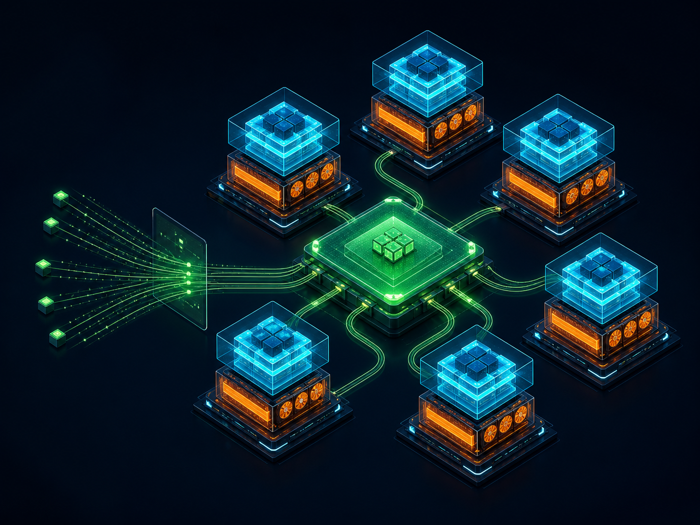

Francisco Javier Arceo
Sr. Principal Software Engineer
Red Hat AIOpen Models. Open Inference. Open Agents.
Sr. Principal Software Engineer
Red Hat AIPrincipal Engineer
Embedded LLMOpen-source agentic inference
Agentic API is a high-performance Rust runtime for state, tools, and client compatibility around vLLM.
Clients
Agent-facing protocols
vLLM Agentic API
Compatibility across agent protocols
vLLM core
High-throughput model serving
MVP shipped
Codex and Claude Code can use open-weight models served by vLLM—with the agent runtime outside the inference engine.
Kubernetes-native distributed inference
Agentic API manages each agent loop. vLLM runs inference. llm-d routes and scales workloads across the cluster.

Agentic tool loop
Claude Code and Codex use the same tool-aware runtime path.